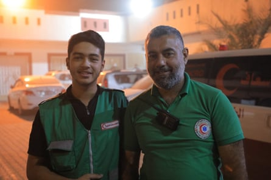

An Israeli airstrike has killed one of Gaza’s most senior doctors in a “catastrophic” loss to the already decimated healthcare system. A number of family members were reported to have been killed alongside him.
Dr Marwan al-Sultan, a renowned and highly experienced cardiologist and director of the Indonesian hospital in the Gaza Strip, is the 70th healthcare worker to be killed by Israeli attacks in the last 50 days, according to Healthcare Workers Watch (HWW), a Palestinian medical organisation.
“The killing of Dr Marwan al-Sultan by the Israeli military is a catastrophic loss to Gaza and the entire medical community, and will have a devastating impact on Gaza’s healthcare system,” said Muath Alser, director of HWW.
“This is part of a much longer and systematic atrocious targeting of healthcare workers sanctioned by impunity. This is a tragic loss of life, but also an obliteration of their decades of lifesaving medical expertise and care at a time when the situation facing Palestinian civilians is unfathomably catastrophic,” Alser added.
“We are in great shock and grief. He cannot be replaced,” said Dr Mohammed Abu Selmia , director of al-Shifa hospital in Gaza. “He was a prominent scholar and one of the two remaining cardiologists left in Gaza. Thousands of heart patients will suffer as a result of his killing. His only fault was that he was a doctor. We have no option but to be steadfast, but the sense of loss is devastating.”
Earlier this month, al-Sultan spoke to the Guardian about the critical situation he and other staff at the Indonesian hospital were facing as they struggled to cope with the number of civilian casualties after the escalation of Israeli attacks in May.
Among the healthcare workers killed in the past 50 days were three other doctors, the chief nurses of the Indonesian hospital and al-Nasser children’s hospital, one of Gaza’s most senior midwives, a senior radiology technician and dozens of young medical graduates and trainee nurses. On 6 June, the first day of Eid, nine healthcare workers were killed in one day in airstrikes in the north of Gaza, where they were sheltering with their families, according to HWW.
Fares Afana, who leads ambulance services in northern Gaza, lost his son in June. Bara’a, who was also working as a paramedic, was at an apartment block in Gaza City’s al-Tuffah neighbourhood on 9 June treating people injured in an Israeli airstrike when the building was hit for a second time by Israeli artillery, killing everyone inside.
Fares Afana, right, with his son Bara’a, a paramedic who was killed in an airstrike in June.Photograph: Handout
“They were directly targeted,” said Afana, who says that Bara’a died alongside two other paramedics. “When I went to the place, it was a horrible sight and cruel to see their bodies torn to pieces. If there had been some reaction from the world when healthcare workers were first targeted by the Israeli forces, they would have not dared to commit more of these attacks.”
He said his son had dedicated his life to the medical profession and had dreams of being a doctor. “He was kind and loved by everyone who knew him.”
The total number of healthcare workers who have lost their lives in military attacks since the war began in October 2023 now exceeds 1,400 according to UN figures.
Insecurity Insight, a conflict data NGO, says it has verified the deaths of hundreds of healthcare workers who have been killed inside health facilities, while attempting to reach wounded civilians, by Israeli sniper fire, when travelling in ambulances, while evacuating patients, at checkpoints and inside schools and refugee camps used as temporary shelters since October 2023.
It is believed that hundreds more healthcare workers from Gaza remain in Israeli detention, where they have reported being tortured, beaten and held without charge.
Medglobal, a medical NGO based in the US that provides medical services and care in Gaza, says it believes more than 300 medical staff are in Israeli prisons, among them senior physicians including Dr Hussam Abu Safiya, the director of the Kamal Adwan hospital who has been held in detention since December 2024.